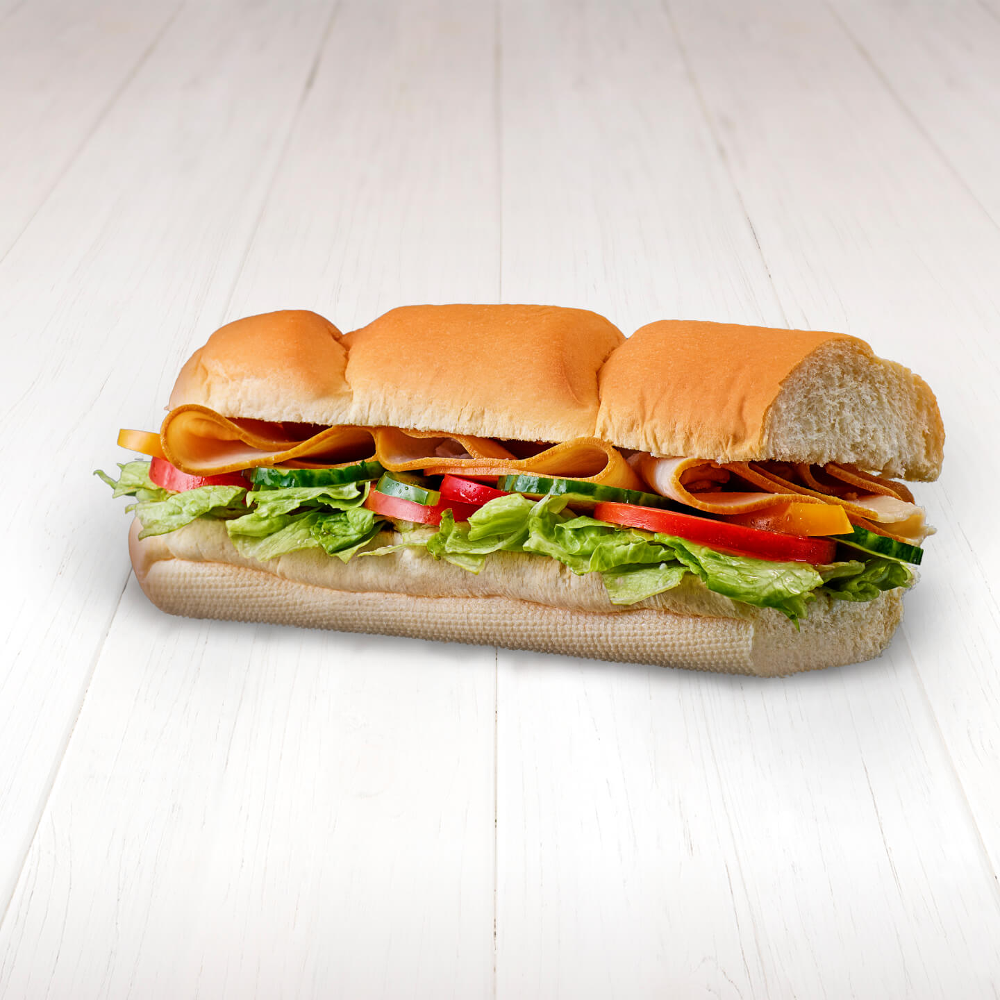

SUBWAY este un lanț american de restaurante fast-food. La sfârșitul anului 2010, compania avea 33.749 de unități la nivel mondial, din care puțin peste 24.000 în SUA.[1] Tot în anul 2010, SUBWAY a devenit cel mai mare lanț de restaurante din lume, în funcție de numărul unităților, întrecând McDonald's care deținea 32.737 de unități.[1] În ianuarie 2012, SUBWAY avea 36.162 de restaurante, în 98 de țări.[2] În Ianuarie 2016, SUBWAY deținea 44,603 restaurante în 111 țări, dintre care 27,058 în SUA. La nivel global, încasările firmei s-au situat la 15,2 miliarde de dolari în anul 2010.[1]SUBWAY are unele dintre cele mai mici costuri de start-up din întreaga industrie de profil, investiția medie într-o unitate deschisă în Europa Centrală și de Est fiind de aproximativ 100.000 de euro.[2] Produsul de bază al lui SUBWAY este sandvișul submarin („submarine sandwich” sau „sub”). În restaurante se mai vând tortilla, pâine cu mirodenii, lipii, supe, salate, băuturi calde (ceaiuri, cafea, ciocolată caldă), băuturi răcoritoare (Pepsi, Mirinda, 7 Up, Mountain Dew, Lipton, Heineken) și gustări dulci și sărate (fursecuri, gogoși, brioșe, chips-uri Lay's). Cel mai bine vândut produs SUBWAY este sandvișul B.M.T., care conține ardei, salam și șuncă. Inițial, abrevierea era de la „Brooklyn Manhattan Transit”, dar acum înseamnă „Biggest, Meatiest, Tastiest” (cel mai mare, cel mai cărnos, cel mai gustos). SUBWAY în România Pe 10 aprilie 2012, SUBWAY a deschis prima reprezentanță în România, în București.[3] România a devenit cea de-a 100-a țară în care compania își vinde produsele.[3] În august 2014, rețeaua deținea 20 de restaurante în România.[4] În prezent, SUBWAY deține 40 de restaurante în România. 17 în București, 2 în Timișoara, 2 în Brașov, 2 în Cluj, 2 în Sibiu, 2 în Ploiești și câte unul în Iași, Pitești, Constanța, Suceava, Alba Iulia, Arad, Deva, Baia Mare, Focșani și Gura Humorului. Meniul este divers și conține pe lângă carne (pui&curcan, vită, porc, pește) numeroase topping-uri pe bază de brânză cu legume proaspete, sosuri și condimente, clientul având opțiunea personalizării sandvișului după bunul plac.
-

Italian Sandwich
-
Salami Sandwich
-

Steak & Cheese Sandwich
Tuna Sandwich
Turkey Sandwich
Ham Sandwich
Chicken Strips Sandwich
display: block;Chicken Teriyaki Sandwich
-
Coca-Cola
-
Coffee
-
Latte
-
Large Menu/h2>
-

Half Menu
-
Coffee and Cookie
-
Latte and Cookie
NO.92 REVOLUTIEI ST. AP. 1 Arad, Tel 0770 999 222